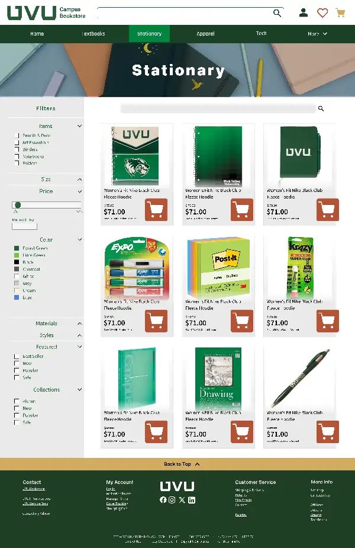
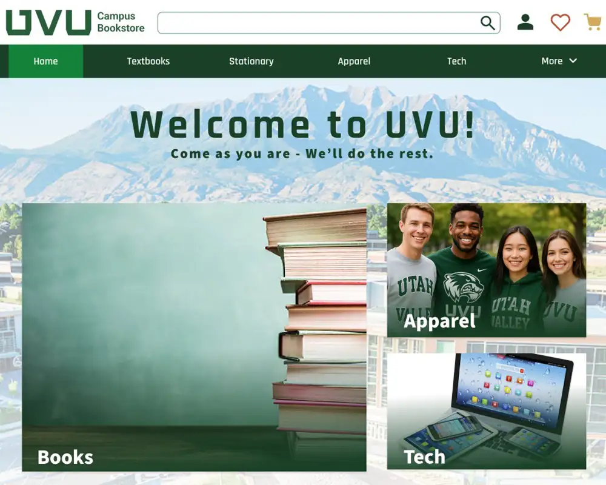

Before

Cluttered and difficult to scan
The original homepage felt crowded and lacked a clear path for students trying to browse products or locate textbooks.

At the beginning of the semester, I worked on a client-based UX project redesigning the UVU Bookstore website. The bookstore team noticed that many customers were adding items to their carts but not completing the checkout process. The site also lacked visual engagement and did not encourage users to explore products.
Our goal was to identify usability issues and redesign the experience to feel more inviting, intuitive, and student-centered. My primary focus was improving the homepage experience and shopping flow.
UX/UI Designer
12 weeks
4 designers → 2 designers
Figma, Adobe Illustrator, Eye-tracking software
To better understand how students interacted with the UVU Bookstore website, we conducted usability testing with three participants — two current UVU students and one UVU alumni.
Participants were asked to go to the first place they would normally visit when using the bookstore. Then they were asked to go through the process of adding an item to the cart and working toward checkout.
Every participant experienced frustration with the navigation. The site structure felt disorganized, and users had difficulty understanding where information was located or how to move through the site.
During testing, several patterns emerged in how participants interacted with the website.
These observations showed that the website contained a large amount of information that was not relevant to the primary goals of most users.
“Every participant commented on the navigation structure and struggled to understand where key information was located.” – UVU Student Participant
Eye-tracking sessions revealed how students visually explored the site. Most users began by scanning the homepage to understand where major sections were located before attempting to find textbooks.
However, several participants quickly became confused when they realized that although the navigation included a “Books” section, it did not clearly lead to textbooks. This mismatch between expectations and content caused students to lose confidence in the navigation.
The most significant issue discovered during testing was the navigation system. Participants consistently struggled with dropdown menus that behaved unpredictably and occasionally disappeared when users attempted to access sub-navigation items.
This glitchy behavior forced participants to restart their navigation process multiple times, interrupting their flow and increasing frustration.
In addition to technical issues, the navigation contained too many categories and was not organized in a way that aligned with how students expected to find products. Many sections could have been grouped into fewer, clearer navigation tabs.

My primary focus was redesigning the homepage experience. The original layout felt chaotic and lacked clear visual hierarchy. I wanted the new design to feel welcoming, visually calm, and easier to navigate.
To achieve this, I reorganized content into clearer categories based on user interest and popular product selections. I also introduced more white space to reduce visual overwhelm and help guide the user’s eye through the page naturally.
After multiple layout iterations, I selected a design that balanced clarity, usability, and visual appeal.

Comparing the original bookstore homepage with the redesign shows how clearer hierarchy, better spacing, and more intentional organization helped create a calmer and more student-friendly experience.
The original homepage felt crowded and lacked a clear path for students trying to browse products or locate textbooks.

The redesigned homepage grouped content more intentionally, added breathing room, and helped guide users toward key actions.

The original homepage felt crowded and lacked a clear path for students trying to browse products.

The redesigned homepage introduces better spacing, clearer categories, and improved visual hierarchy.
In addition to the homepage, I also helped design the shopping and product browsing experience. Our team introduced filter options to give users more control when searching for products, especially when looking for specific items.
I helped develop the filter categories and organized them in a way that supported usability and efficiency. I also designed product cards that clearly displayed pricing, imagery, and key product information so users could quickly compare their options.
The final designs were connected and prototyped in Figma to simulate real interaction and demonstrate the full user flow.

After testing the redesigned prototype, users were able to navigate the website more easily and reported feeling less overwhelmed by the layout. The improved visual hierarchy and clearer navigation helped users locate products faster and reduced frustration.
Overall, the redesigned experience felt more intuitive, reliable, and inviting.
One of the most challenging aspects of the project was reorganizing the navigation structure so it made sense both to our design team and to the students who participated in testing. We ultimately prioritized the most commonly used categories and simplified the navigation to reduce information overload.
This project reinforced how important it is to rely on research rather than personal assumptions when designing user experiences. Observing real users interacting with the website revealed usability problems that were not immediately obvious from a design perspective.
If I were to continue improving this project, I would design a mobile version of the bookstore experience. The mobile interface currently contains many of the same issues as the desktop version and would benefit from a simplified layout and clearer navigation structure.
Click below to explore the full interactive prototype in a new tab.
